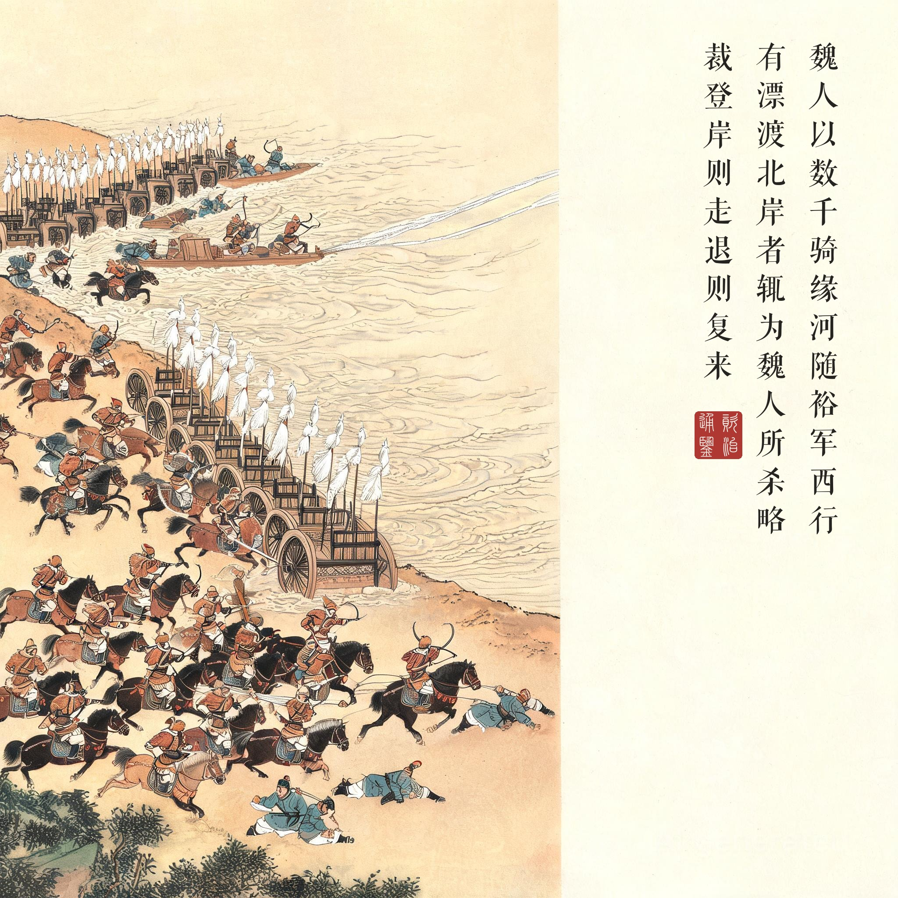
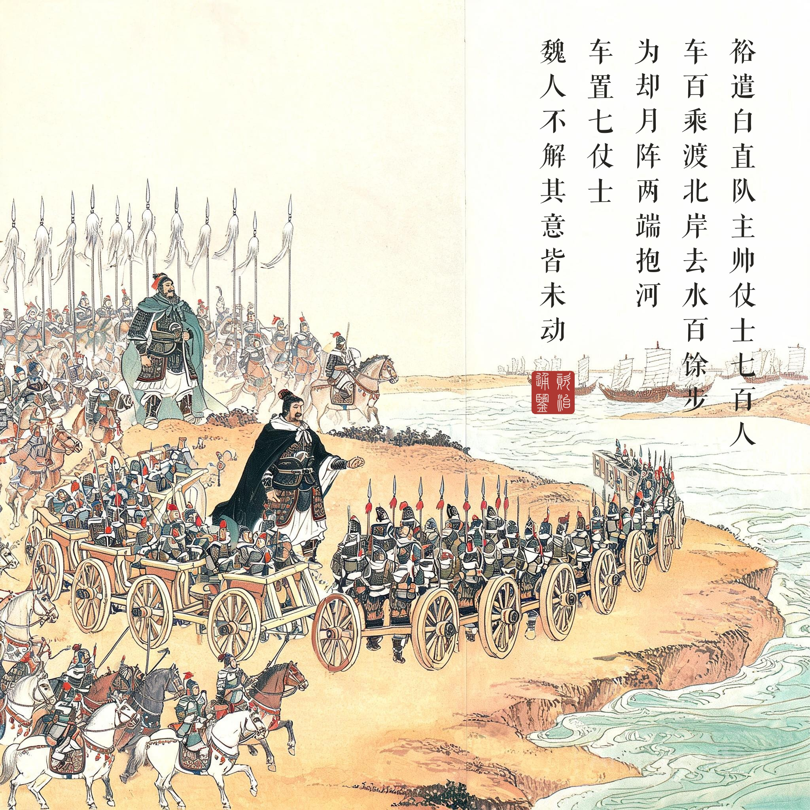
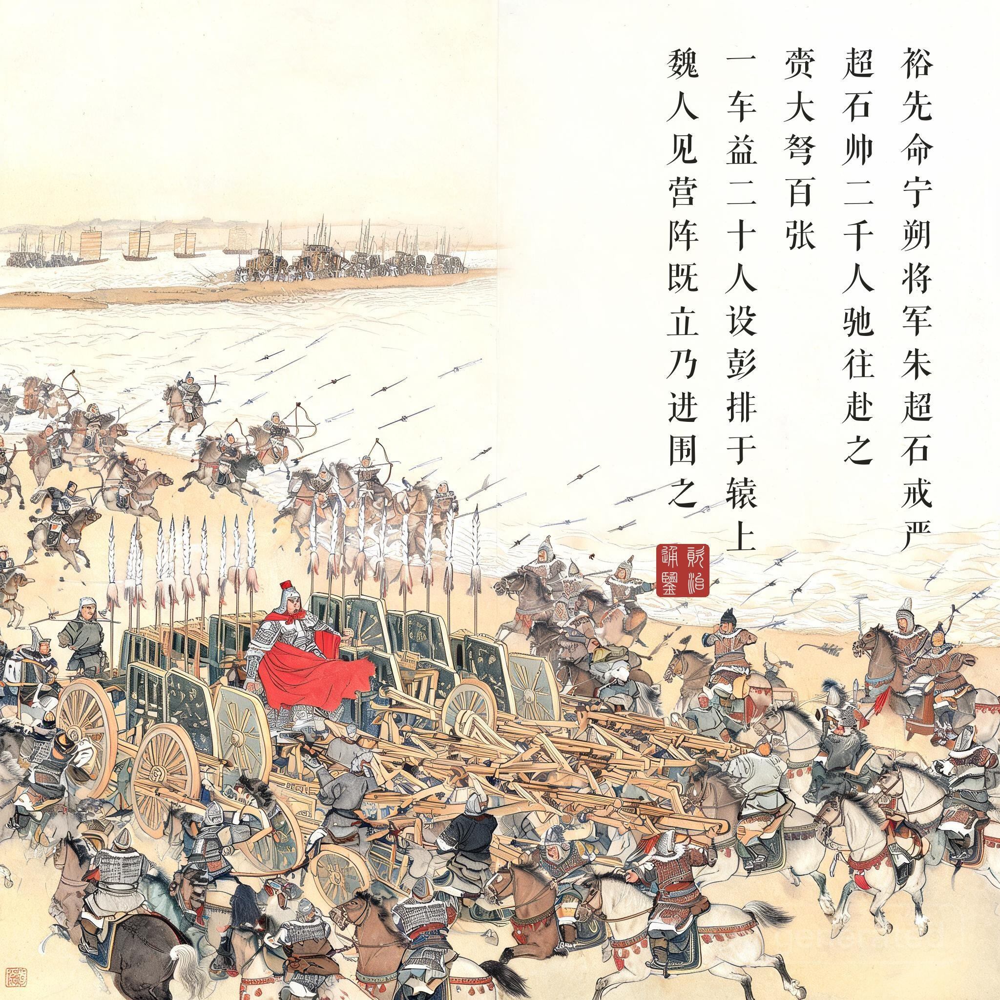
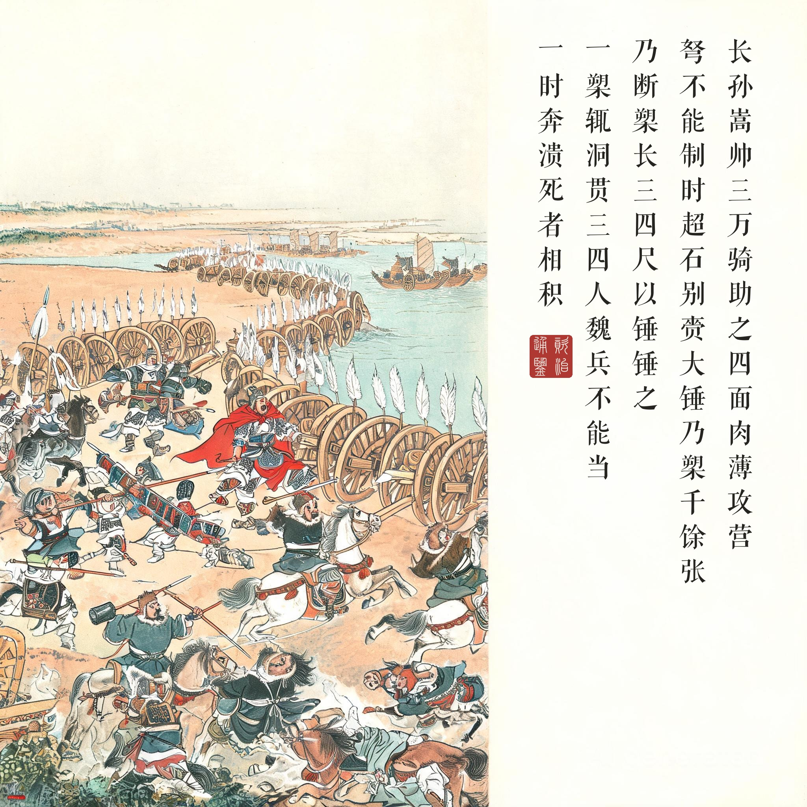

《资治通鉴 · 卷第一百一十八 · 晋纪四十》安皇帝癸义熙十三年（公元 417 年）
（据 daizhigev20《资治通鉴》底本节录）
魏人以数千骑缘河随裕军西行；军人于南岸牵百丈，风水迅急，有漂渡北岸者，辄为魏人所杀略。裕遣军击之，裁登岸则走，退则复来。夏，四月，裕遣白直队主丁旿帅仗士七百人、车百乘，渡北岸，去水百馀步，为却月阵，两端抱河，车置七仗士，事毕，使竖一白毦；魏人不解其意，皆未动。裕先命宁朔将军朱超石戒严，白毦既举，超石帅二千人驰往赴之，赍大弩百张，一车益二十人，设彭排于辕上。魏人见营阵既立，乃进围之；长孙嵩帅三万骑助之，四面肉薄攻营，弩不能制。时超石别赍大锤乃槊千馀张，乃断槊长三四尺，以锤锤之，一槊辄洞贯三四人。魏兵不能当，一时奔溃，死者相积。
北魏用几千骑兵沿黄河北岸跟着刘裕的军队向西行进；晋军在南岸拉着百丈缆绳逆流行进，风大水急，有被冲漂到北岸的，就被魏人杀害掳掠。刘裕派军还击，敌人刚一登岸就跑，退回去又跟上来。夏天四月，刘裕派白直队主丁旿率仗士七百人、战车一百乘渡到北岸，离水一百多步，布下却月阵，阵的两端抱住河岸，每辆车配置七名仗士，布置完毕，竖起一面白羽毛旗；魏人不明白其中的用意，都没动。刘裕先命令宁朔将军朱超石戒备，白旗举起后，朱超石率两千人飞驰赶赴，携带大弩一百张，每车增派二十人，在车辕上设置彭排。魏人见营阵已经立起，就上前围攻；长孙嵩率三万骑兵助战，四面肉搏攻营，弩已制不住。当时朱超石另外带着大锤和槊一千多支，把槊折断成三四尺长，用大锤锤击槊，一支槊往往洞穿三四人。魏兵抵挡不住，一时间奔逃溃散，尸体堆积。
以工事代替骑兵。南方军队对北方铁骑的结构性劣势，是整个南朝的军事焦虑。却月阵给出的答案是：既然跑不过你，就不跑——用车阵、弧面、背水三层工事把“机动”从战场上排除掉，逼你在我的阵面上比消耗。七百人立骨、两千人填肉、白毦为号——整个部署像一次工程作业而非一场遭遇战，这正是一切以寡敌众战法的底色：把野战变成攻城战，而攻城的主动权在我。
土办法的翻盘。本回最精彩的技术细节是断槊：弩“不能制”的时刻，胜负曾向三万骑倾斜。朱超石的应对没有换兵器谱，只是把长槊锯短、配锤——投掷变锤击、远射变近凿。“一槊辄洞贯三四人”是冷兵器时代罕见的杀伤效率描述，司马光记下这一笔，等于记下了战役的转捩点在工艺而非勇力。
读到最远处的南朝。刘裕北伐是东晋南朝二百年里唯一打到长安的军事行动，却月阵则是这次远征最险的插曲。读画人可将本回与回九（背水一战）对照看：韩信背水是置之死地而后生，刘裕背水是精心测算的工事战——同样临水列阵，隔了五百年，战争的艺术从心理战进化到了工程学。而最深的讽刺在阵外：打赢了这一仗的王朝，几年后就在自己人手里丢掉了刚收复的长安。